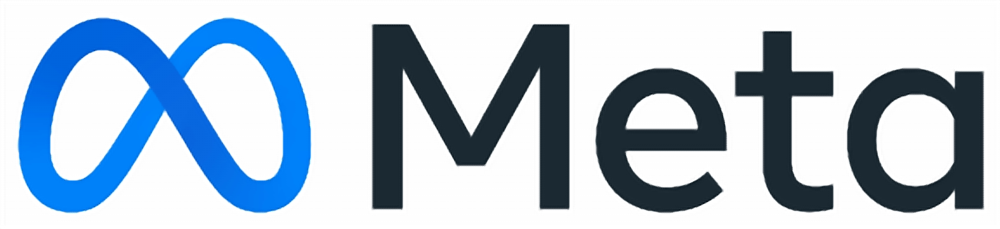
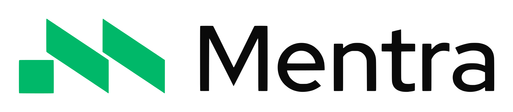
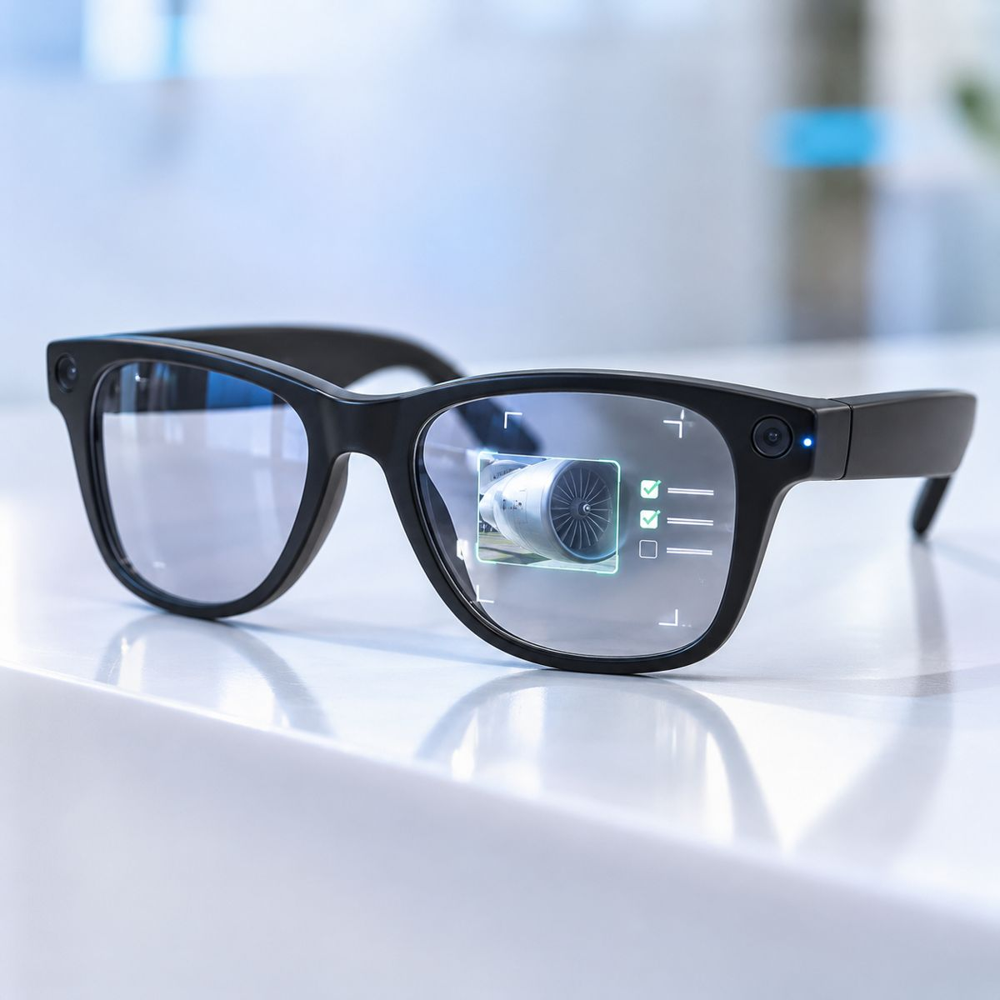
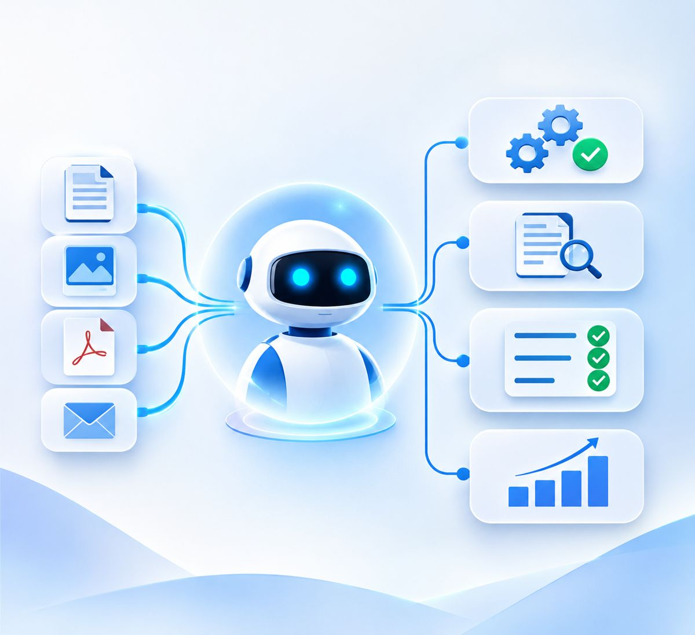

Device-neutral by design
We build for Meta, XREAL, Snap Spectacles, MentraOS, Android XR, Samsung XR and RayNeo. We test devices with your team on site, so you buy the glasses that fit the job, not the ones that demo best.
Q2M Solutions designs and builds AI-powered apps for smart glasses: guided inspections, hands-free capture, remote expert calls and vision AI, connected to the systems your business already runs. We work with automotive, aviation, manufacturing, healthcare and insurance teams across India and abroad.
Hardware changes every year. We keep your app portable across devices and choose the right glasses for each job.


Logos are trademarks of their respective owners, shown for reference only. They do not imply partnership or endorsement.
Smart glasses platforms we build for
Stages from on-site discovery to roll-out
Team for the glasses app, the AI and the back-office integration
Enterprise pilots delivered (add your real figure)
Most agencies build a demo app. We build the whole working system: the glasses app, the AI inside it and the connection to your records.
We build for Meta, XREAL, Snap Spectacles, MentraOS, Android XR, Samsung XR and RayNeo. We test devices with your team on site, so you buy the glasses that fit the job, not the ones that demo best.
Vision models that read labels and flag damage, voice assistants that answer from your manuals, and agents that write the report. The AI is part of the app, not an add-on.
Every photo, checklist and note lands in your job, asset, claim or quality system through its existing APIs, so the report is complete before the wearer leaves the site.
Offline steps for weak signal, voice control for gloved hands, minimal overlays for safety, and battery plans for full shifts. Designed on the shop floor, not in a meeting room.
Six services that take a hands-on workflow from paper or tablet to smart glasses, with AI and your systems connected.
Native apps for display, camera and AR glasses, built around one workflow and the people who do it.
Explore this service →Models that read serial numbers, gauges and labels, and assistants that answer questions from your own SOPs.
Discuss this service →Live calls where a senior engineer sees the wearer's view, talks them through the fix and marks up the scene.
Discuss this service →Step-by-step procedures in view, photo and voice capture per step, and a complete report at the end of the job.
Discuss this service →Results written to SAP, Dynamics, Salesforce, ServiceNow or your custom system, with an audit trail for every step.
Discuss this service →On-site device trials, a measured pilot with one team, then charging, updates, assignment and wiping at scale.
Discuss this service →Smart glasses fall into four broad types. We match the type to the job, then test the shortlist on your site before you buy in volume.
A small display in one or both lenses for checklists, step numbers and alerts in view.
XREAL · RayNeo · Meta display glassesCamera, microphones and speakers in a normal frame, for capture, voice assistants and remote calls.
Meta camera glassesGraphics placed in the world around the wearer, for spatial guidance and training.
Snap Spectacles · Samsung XROperating systems and SDKs that run one app across several glasses, so your app outlives the hardware.
MentraOS · Android XRThe best cases share three traits: hands-on work, a procedure to follow, and evidence that matters later.
Talk to an expertVehicle intake, pre-delivery inspection and damage capture with a guided checklist.
Inspection cards under the wing, photo evidence per card, a remote engineer on call.
Quality checks, line changeovers and work instructions without stopping the line.
Hands-free records and lab procedures where staff cannot touch a screen.
On-site assessments with photos and voice notes filed straight into the claim.
Meter, asset and site checks, with offline steps for remote locations.
Small, measured steps. You decide whether to continue after each one, and you keep everything we produce.
We ride along with the team, map one workflow and record today's time per job, error rate and travel.

02Two or three devices tested in your real lighting, noise and safety gear. The team picks what they will actually wear.

03The app for that workflow, connected to one back-office system, run with a small group over several weeks.
Fixes from the pilot, device management, training, and a plan to add teams and workflows.
Workflows we design and demo. Come and wear them at our desk at Bengaluru Tech Summit 2026.
In 30 minutes we map how smart glasses could handle it, show a similar demo, and outline a pilot.
We design and build the software that runs on smart glasses: guided workflows, photo and voice capture, remote expert calls and AI that reads the scene, plus the connections that send results to your business systems.
Meta, XREAL, Snap Spectacles, MentraOS, Android XR, Samsung XR and RayNeo. We pick the device per task after testing it with your team, and keep the app portable where the platform allows.
You get a team that covers glasses apps, AI and back-office integration in one place, working across Indian, Middle East, European and US time zones, with on-site visits for discovery and device trials in India.
Yes. Key steps run offline and sync photos, notes and results when the device or the paired phone reconnects. We design for weak signal in workshops, hangars and plants from the start.
Recording is limited to the steps that need it, with a visible indicator, consent steps for customers or patients, and storage in your own cloud under your access rules.
A focused pilot with one team and one workflow usually runs for weeks rather than months. We agree the timeline and the success measures in writing after the on-site discovery.
Yes. Try live demos at our desk at Bengaluru Tech Summit 2026, or book a session and we will show a demo built around a workflow like yours.